Revelado de las fotos de microcemento
Izquierda: la foto original del móvil (el rectángulo rojo marca el recorte). Derecha: la versión que usa la web. Solo se ha recortado lo que no es obra, ajustado el contraste sin cambiar el color y aplicado un enfoque ligero. El acabado no se ha retocado.
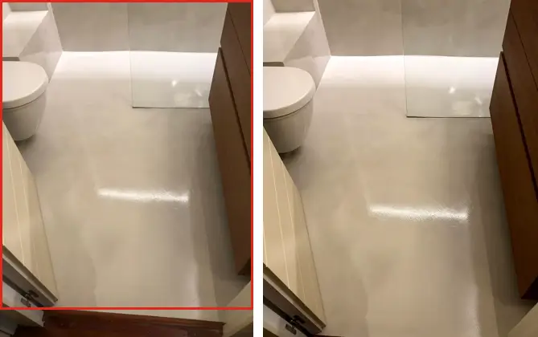
mc-bano-general · recorte marcado en rojo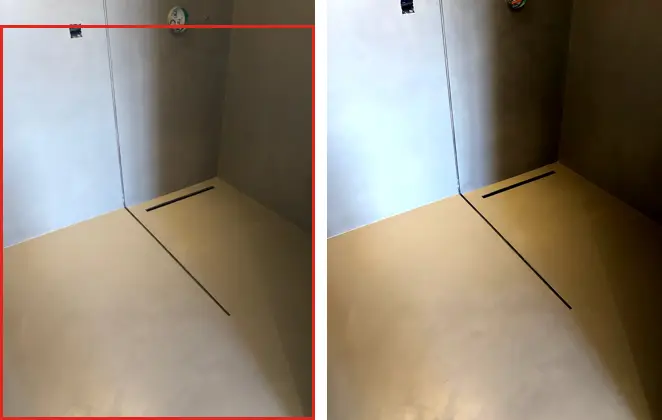
mc-bano-ducha-desague · recorte marcado en rojo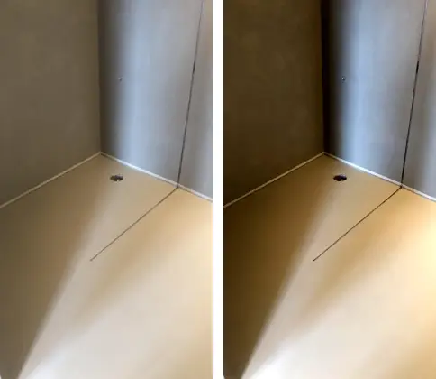
mc-bano-ducha-esquina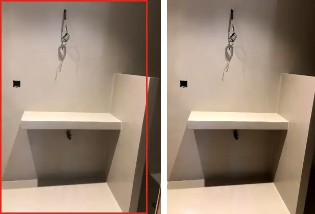
mc-bano-encimera · recorte marcado en rojo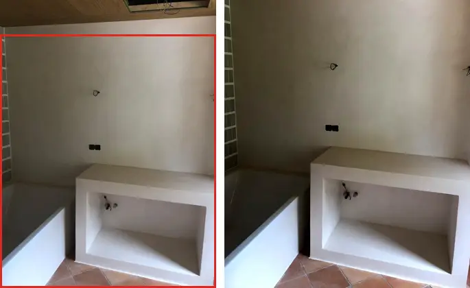
mc-bano-banco · recorte marcado en rojo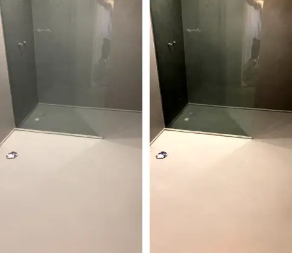
mc-bano-mampara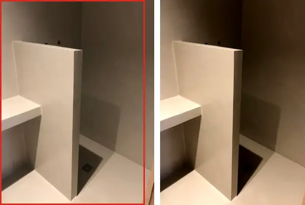
mc-bano-murete · recorte marcado en rojo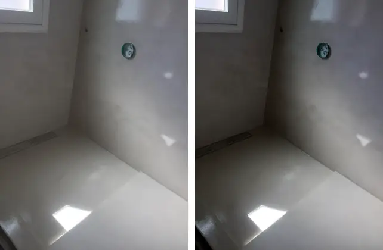
mc-bano-luz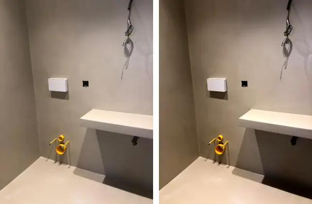
mc-bano-obra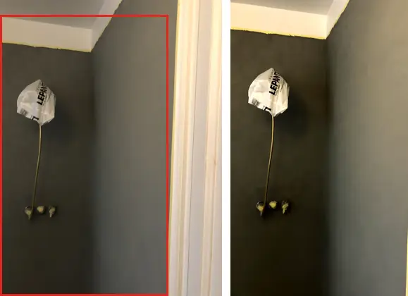
mc-gris-pared · recorte marcado en rojo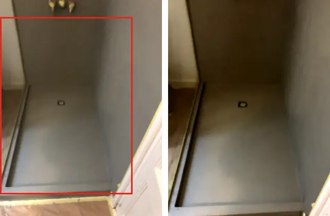
mc-gris-ducha · recorte marcado en rojo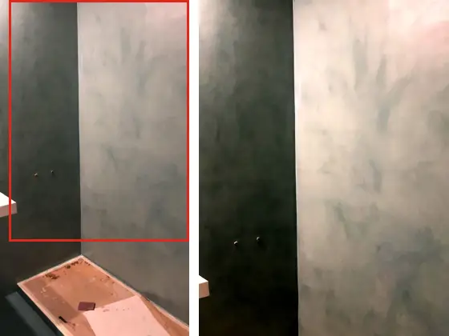
deco-pared-aguas · recorte marcado en rojo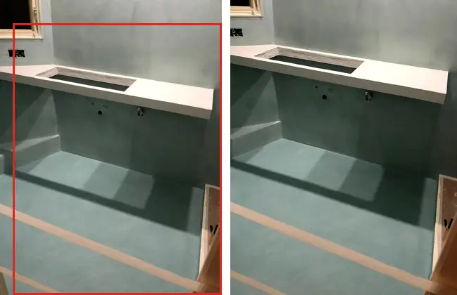
mc-proceso-base · recorte marcado en rojo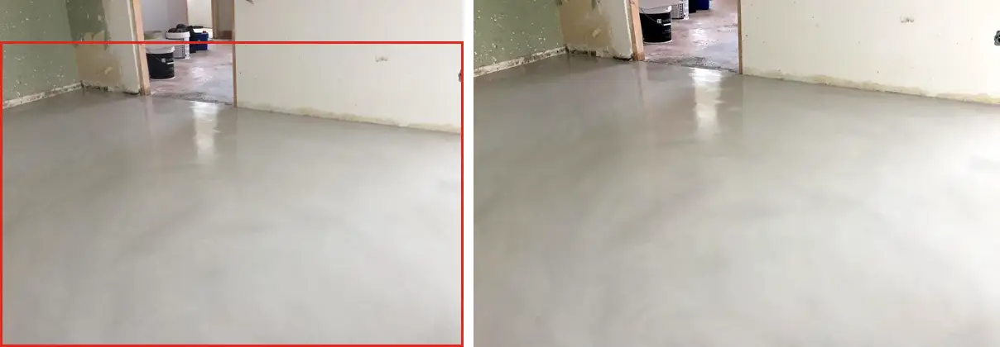
mc-proceso-suelo · recorte marcado en rojo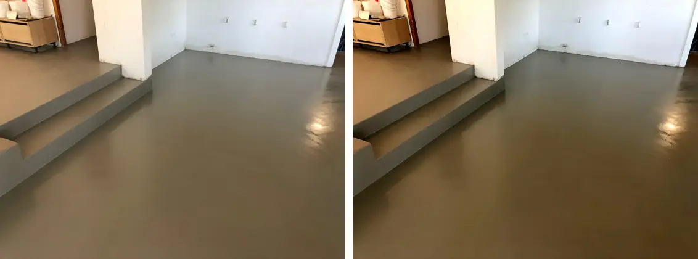
mc-suelo-escalones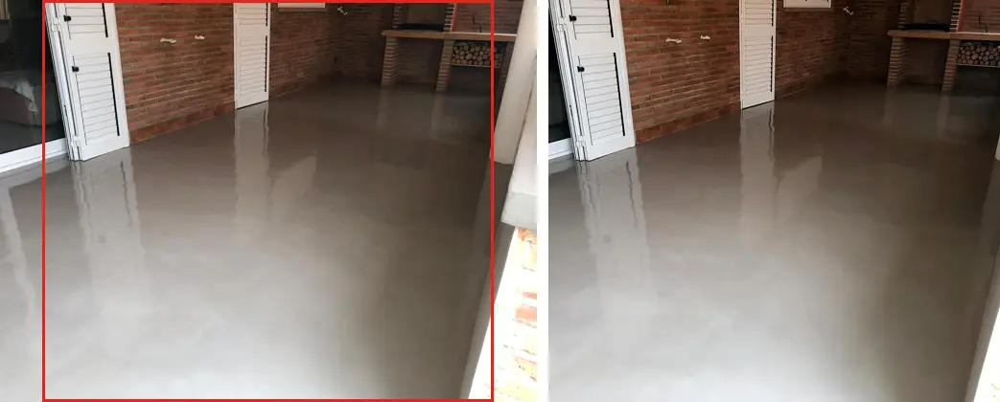
mc-suelo-ladrillo · recorte marcado en rojo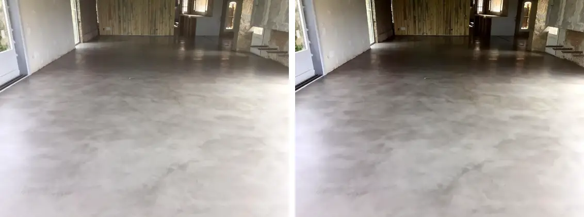
mc-suelo-salon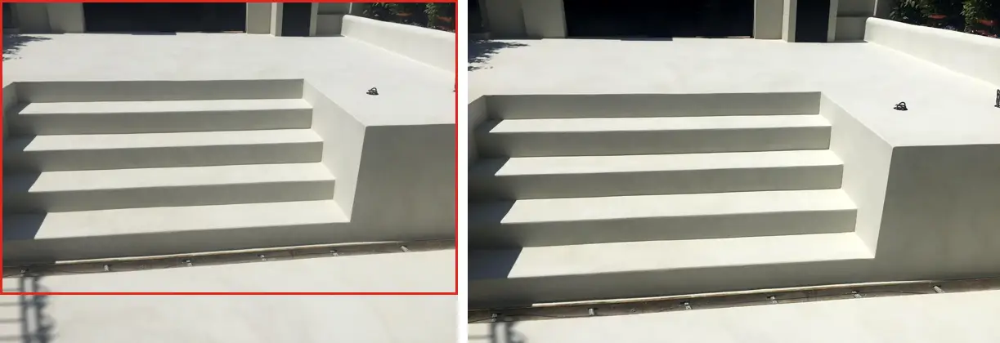
mc-terraza-escalera · recorte marcado en rojo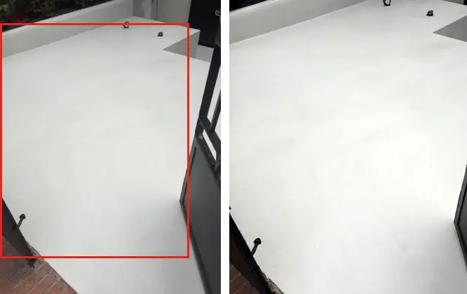
mc-terraza · recorte marcado en rojo